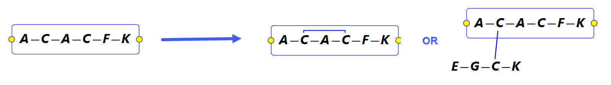
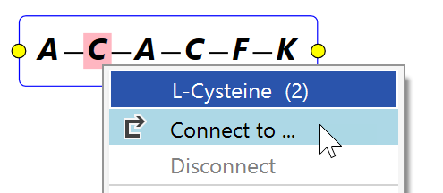
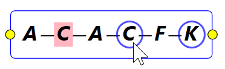
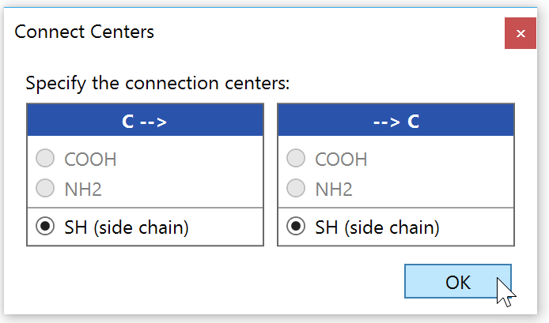
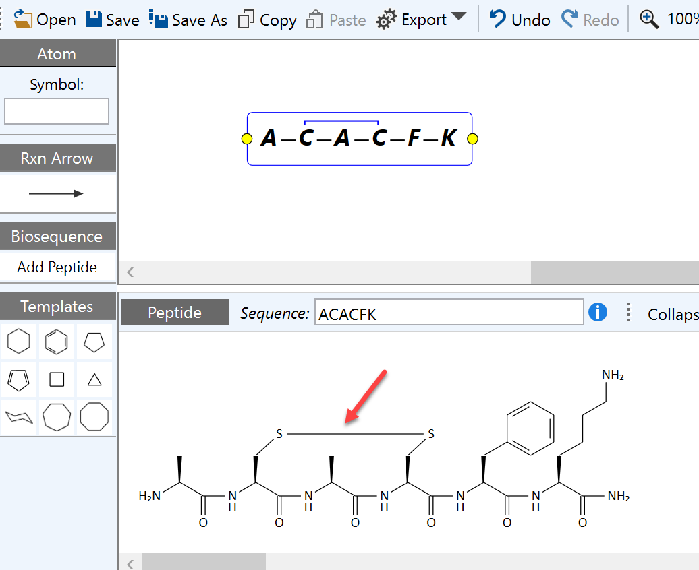
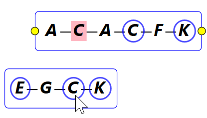
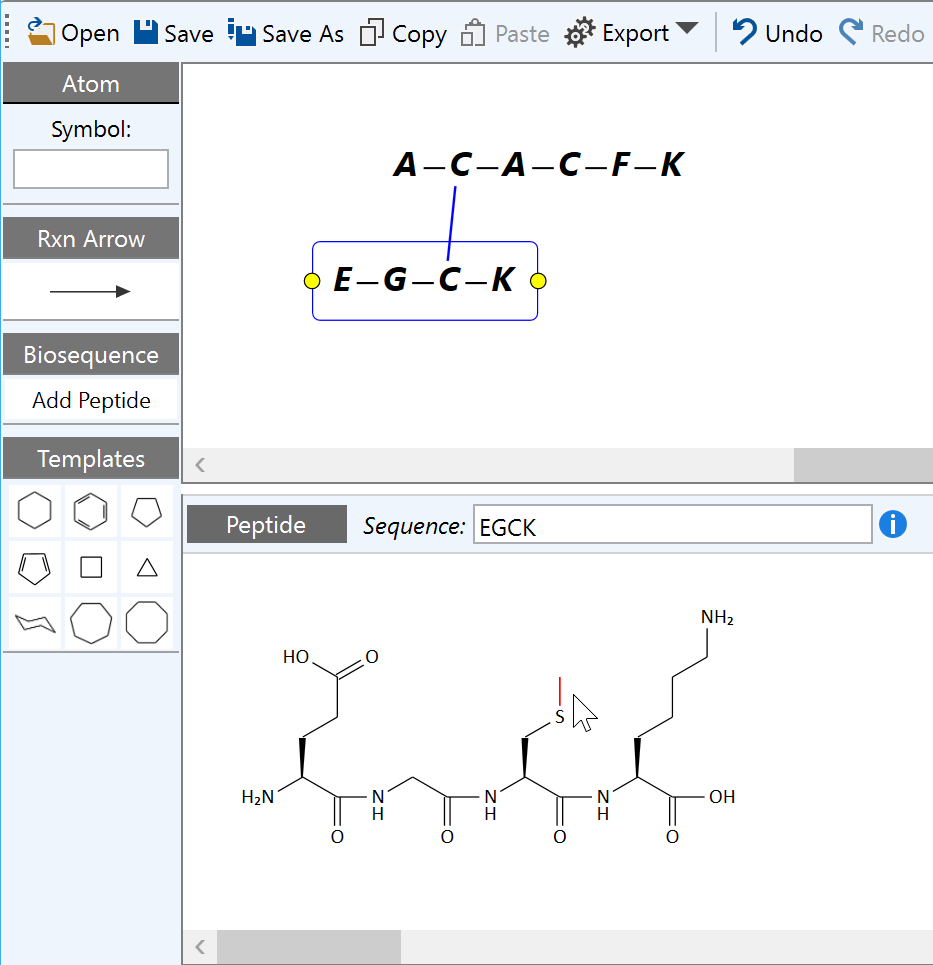

Add Crosslink Bonds
Summary
This topic demonstrates how to create a crosslink bond within and across peptide sequences.

Step by Step
To create a crosslink bond either within a peptide sequence, or across two sequences, right-click the symbol of the amino acid to connect from, then click Connect to ... in the appearing context menu:

1. Intra-Peptide Connections
All available crosslink (or cyclization) end points now are marked by blue circles, the originating center is highlighted in pink.

After clicking one of the marked amino acids, a subsequent dialog allows the assignment of available attachment points within the selected amino acids:

Clicking OK finalizes the crosslink bond formation:

2. Inter-Peptide Connections
Creating a crosslink between two peptide sequences works in analogy. However, it is important to understand that only sequences which are grouped into one reaction component, i.e. which are vertically overlapping or were grouped via the selection rectangle context menu, are available for cross-connection (ungrouped reaction components are separated by a "+" symbol). In this case, the available attachment points are highlighted across all sequences present in the group.

Clicking one of the marked amino acids of the second sequence then performs the connection:

Such connections not only allow the creation of e.g. disulfide bridges, but can e.g. also be be utilized to branch another peptide sequence from a side chain of an existing backbone.
To delete an inter-peptide bond, just click on top of it and press the DEL key.